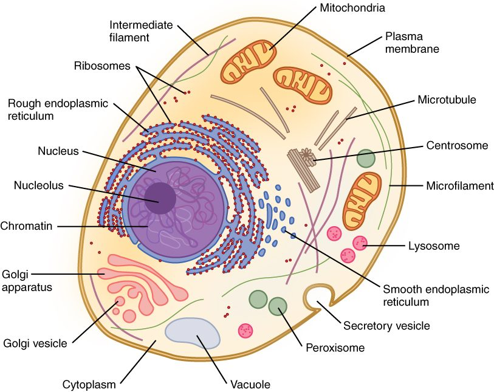

Organelles and the cytoskeleton
1Why this matters
Jonah, 9, has had a wet cough almost every day since he was a baby, along with ear and sinus infections that keep coming back. Antibiotics help, then the infections return. A sample of cells brushed from inside his nose shows the problem under the microscope: the tiny beating projections on those cells are frozen in place. With nothing sweeping the sticky layer out of his airways, trapped microbes stay put. The same defect can later leave men infertile, because a sperm's tail is built the same way.
2What this builds on
3Quick check before you start
1. Which part of a cell lies inside the plasma membrane but outside the nucleus?
- The glycocalyx
- The cytoplasm
- The interstitial fluid
Show the answer
The cytoplasm is everything inside the plasma membrane except the nucleus. The glycocalyx is on the outer surface, and interstitial fluid is outside the cell.
- The glycocalyx:
- Correct: The cytoplasm:
- The interstitial fluid:
2. What does an enzyme do?
- It supplies the energy a reaction needs
- It is used up as the reaction runs
- It speeds up a reaction by lowering its activation energy
Show the answer
An enzyme is a biological catalyst. It lowers the activation energy and is not used up. It does not supply energy to the reaction.
- It supplies the energy a reaction needs:
- It is used up as the reaction runs:
- Correct: It speeds up a reaction by lowering its activation energy:
3. If you double the surface area of a membrane and change nothing else, what happens to the rate of diffusion across it?
- It rises
- It falls
- It stays the same
Show the answer
More surface area gives molecules more places to cross, so the diffusion rate rises. Cells use this with microvilli.
- Correct: It rises:
- It falls:
- It stays the same:
4Anatomy

With labels hidden, select a box to reveal its label.
5How it works, step by step
- A ribosome on the rough endoplasmic reticulum builds a protein meant for export.The new protein enters the ER, where it is folded and given sugar chains.
- The folded protein is ready to leave the ER.A patch of ER membrane buds off around it as a vesicle, which travels to the Golgi apparatus.
- The vesicle fuses with the receiving face of the Golgi.The Golgi modifies the protein, reads its chemical tags and sorts it by destination.
- The protein is sorted for export.It is packaged into a vesicle that moves along microtubules to the plasma membrane.
- The vesicle's bilayer fuses with the plasma membrane.The protein is released outside the cell, and the vesicle's membrane becomes part of the plasma membrane.
6Core concepts
7A common mistake
The wrong idea: Mitochondria make energy.
What actually happens: Energy cannot be created. Mitochondria convert energy that is already stored in the chemical bonds of fuel molecules from food into a form the cell can spend: ATP. They do this by oxidizing those fuels, which uses oxygen. A cell with no fuel or no oxygen gets almost nothing from its mitochondria, however many it has.
8Check yourself
Anything you miss goes into your review queue.
1. A biopsy shows cells packed with rough ER and large Golgi stacks, with many vesicles near the surface facing a duct. What is these cells' main job most likely to be?
- Exporting large amounts of protein
- Making steroids
- Absorbing nutrients through a brush border
- Moving fluid across their surface
Show the answer
Rough ER builds and folds proteins for export, and the Golgi packages them into vesicles bound for the surface. A cell full of both is a protein exporter, like the pancreas cells that make digestive enzymes.
- Correct: Exporting large amounts of protein: Correct. Rough ER plus a large Golgi plus vesicles at the surface is the equipment of a protein-exporting cell.
- Making steroids: Steroids are lipids made in the smooth ER. A steroid-making cell would be full of smooth ER, not rough ER.
- Absorbing nutrients through a brush border: Absorbing cells are marked by a brush border of microvilli, which this description does not mention.
- Moving fluid across their surface: Moving fluid across a surface is the job of cilia, which this description does not mention.
2. Mr. Kowalski has been drinking heavily every day for months. His doctor notices that some of his medicines now wear off faster than expected. Which organelle has most likely increased in his liver cells?
- Rough ER
- Lysosomes
- Golgi apparatus
- Smooth ER
Show the answer
The smooth ER holds enzymes that break down alcohol and many drugs. Heavy drinking makes liver cells build more smooth ER with more of these enzymes, so some medicines are broken down faster.
- Rough ER: Rough ER makes proteins for export and for membranes. It is not the main site of drug breakdown.
- Lysosomes: Lysosomes digest material in acid and recycle worn-out parts. They do not break down most drugs.
- Golgi apparatus: The Golgi modifies, sorts and packages proteins. It does not break down drugs.
- Correct: Smooth ER: Correct. More smooth ER means more drug-breaking enzymes, so medicines wear off faster.
3. A few lysosomal enzymes leak into the cytosol of a healthy cell. Why do they cause little damage?
- The cytosol has no proteins for them to act on
- They work poorly at the near-neutral pH found in the cytosol
- Catalase in the cytosol destroys them at once
- Leaked enzymes are rebuilt into ribosomes straight away
Show the answer
Lysosomal enzymes work best at about pH 4.5 to 5, the acidic interior of the lysosome. The cytosol is near pH 7.2, where they work poorly, so a small leak does little harm.
- The cytosol has no proteins for them to act on: The cytosol is full of proteins, which is exactly why a large leak (autolysis) destroys the cell.
- Correct: They work poorly at the near-neutral pH found in the cytosol: Correct. These enzymes need acid, and the cytosol is close to neutral.
- Catalase in the cytosol destroys them at once: Catalase is inside peroxisomes and breaks down hydrogen peroxide, not other enzymes.
- Leaked enzymes are rebuilt into ribosomes straight away: Ribosomes are not built from leaked enzymes; they build proteins, they are not recycled from them.
4. A cell's surface projections are about 1 micrometer long, have a core of actin, and never move. What are they, and what do they do?
- Microvilli; they increase surface area
- Cilia; they sweep fluid across the surface
- Flagella; they move the cell
- Microtubules; they carry vesicles
Show the answer
Short, nonmoving projections with an actin core are microvilli. They multiply the surface area of the membrane, which speeds absorption.
- Correct: Microvilli; they increase surface area: Correct. An actin core and no movement identify microvilli.
- Cilia; they sweep fluid across the surface: Cilia are longer, have a microtubule core, and beat.
- Flagella; they move the cell: A flagellum is much longer, has a microtubule core, and whips to move the cell.
- Microtubules; they carry vesicles: Microtubules are fibers inside the cell, not projections of its surface.
5. Mature red blood cells have no mitochondria. Which statement follows from that?
- They cannot make ATP and rely on ATP from plasma
- They make ATP in the cytosol instead
- They get their ATP from enzymes inside lysosomes
- They make their ATP on the rough ER instead
Show the answer
Red blood cells make ATP by breaking down glucose in the cytosol, a process that uses no oxygen. That is why they do not use up the oxygen they carry.
- They cannot make ATP and rely on ATP from plasma: Cells cannot take ATP from plasma in useful amounts; every cell makes its own. Red cells do make ATP.
- Correct: They make ATP in the cytosol instead: Correct. Without mitochondria, red cells make ATP by breaking down glucose in the cytosol.
- They get their ATP from enzymes inside lysosomes: Lysosomes digest material; they do not make ATP. Mature red cells also lack lysosomes.
- They make their ATP on the rough ER instead: The rough ER builds proteins; it does not make ATP. Mature red cells also lack ER.
6. Which statement about mitochondria is most accurate?
- They create new energy from the oxygen they take in
- They store the body's reserve of ATP
- They make energy without any fuel
- They transfer energy from fuel into ATP
Show the answer
Energy is never created. Mitochondria oxidize fuel molecules from food and capture the energy stored in their bonds as ATP. Oxygen is needed for those oxidations, but it is not the energy source.
- They create new energy from the oxygen they take in: Oxygen is used in the reactions, but energy comes from the fuel's chemical bonds, and no energy is created.
- They store the body's reserve of ATP: Cells hold only a few seconds' worth of ATP; the body's energy reserves are fat and glycogen, not ATP in mitochondria.
- They make energy without any fuel: Without fuel molecules, mitochondria have nothing to oxidize and make almost no ATP.
- Correct: They transfer energy from fuel into ATP: Correct. Mitochondria convert stored fuel energy into ATP; they do not create energy.
9Summary
The cytoplasm is the cytosol (its fluid) plus the organelles. Ribosomes build proteins: free ones for the cytosol, bound ones on the rough ER for membranes, lysosomes and export. The smooth ER makes lipids, breaks down some drugs and stores calcium. Vesicles carry cargo between membranes; the Golgi modifies, sorts and packages it. Together these form the endomembrane system. Lysosomes digest material in acid and recycle worn-out parts (autophagy). Peroxisomes oxidize long fatty acids and toxins and destroy the hydrogen peroxide this makes. Mitochondria convert fuel energy into ATP. The cytoskeleton (microfilaments, intermediate filaments, microtubules) shapes the cell and moves things within it. Cilia move fluid, a flagellum moves a sperm, and microvilli add surface area.